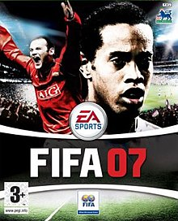

Öncelikle adım Eren. Aslen Tekirdağlı olmakla
birlikte İstanbul'da doğup orada büyüdüm. Küçükken hep "İstanbul mu
Tekirdağ
mı daha güzel?" diye sorarlardı. Ben de ikisi de
çok güzel karar
veremiyorum derdim. İstanbul'daki gerek gezilip görülecek yerler gerekse imkanları çok daha geniş ve çeşitli
olmasından dolayı artıları fazla fakat
dezavantajı ise insanın psikolojisini ciddi anlamda etkileyen kalabalık,gürültü ve stresinin çok olması göz
ardı
edilemez.
6 yaşıma geldiğimde okula başlamam gerektiği söylendi ve eğitim hayatıma evime yakın bir okulda başladım. Orada hem ilkokul hem de ortaokul olmak üzere 8 sene geçirdim. Daha sonra lise sınavlarına girerek Eyüp Anadolu Lisesi'ne başladım. Burada da harika 4 yıl geçirdikten sonra Sakarya Üniversitesi'nde bilgisayar mühendisliği bölümüne başladım. Neden bilgisayar mühendisliği diye soracak olursanız biraz hikayesini anlatayım:
Daha çocukluk yıllarımda evde bilgisayar ile tanıştım. O zaman daha bilgisayarın ne olduğunu bile bilmiyorum ama ilgimi çeken bir şeyler olduğunu da hissediyorum. İlk başta bilgisayar "mouse"u ve klavyesi gibi temel donanımlarını öğreniyorum. Biraz biraz öğrendikten sonra o zamanki bilgisayarda yüklü "FIFA 07" oyununu oynamak çok zevkli geliyordu bana. Oyuncuların koşuş mekaniği ve grafiklerin o zamana göre güzel olması oyunu sevmemdeki sebepler olduğunu düşünüyorum. Daha sonra bu oyunların nasıl yapıldığını araştırıyorum ve "yazılım" adında bir şeyin olduğunu öğrenip "Neden ben de kendi oyunumu yapmayayım?"diyorum. O zaman bu zaman bilgisayarda vakit geçirmekten hoşlanıyorum ve birkaç yıl sonra yazılım alanında daha donanımlı hale geldiğimde aklımda benim de yapabileceğim güzel oyun fikirleri bulunuyor. Tabi bilgisayar mühendisliği bundan ibaret değil. Otonom araçlar ile de ilgilendiğimi söyleyebilirim. Gelecek yıllarda yapay zekanın daha da ilerleyeceğini hepimiz biliyoruz ve bu sebeple otonom araçların da önem kazanacağını düşünüyorum. Hatta hazihazırda şu an bile TESLA bu işi yürüten firmalardan biri. Tüm bu sebeplerden ötürü bilgisayar mühendisliği bölümü benim için biçilmiş kaftan.
6 yaşıma geldiğimde okula başlamam gerektiği söylendi ve eğitim hayatıma evime yakın bir okulda başladım. Orada hem ilkokul hem de ortaokul olmak üzere 8 sene geçirdim. Daha sonra lise sınavlarına girerek Eyüp Anadolu Lisesi'ne başladım. Burada da harika 4 yıl geçirdikten sonra Sakarya Üniversitesi'nde bilgisayar mühendisliği bölümüne başladım. Neden bilgisayar mühendisliği diye soracak olursanız biraz hikayesini anlatayım:
Daha çocukluk yıllarımda evde bilgisayar ile tanıştım. O zaman daha bilgisayarın ne olduğunu bile bilmiyorum ama ilgimi çeken bir şeyler olduğunu da hissediyorum. İlk başta bilgisayar "mouse"u ve klavyesi gibi temel donanımlarını öğreniyorum. Biraz biraz öğrendikten sonra o zamanki bilgisayarda yüklü "FIFA 07" oyununu oynamak çok zevkli geliyordu bana. Oyuncuların koşuş mekaniği ve grafiklerin o zamana göre güzel olması oyunu sevmemdeki sebepler olduğunu düşünüyorum. Daha sonra bu oyunların nasıl yapıldığını araştırıyorum ve "yazılım" adında bir şeyin olduğunu öğrenip "Neden ben de kendi oyunumu yapmayayım?"diyorum. O zaman bu zaman bilgisayarda vakit geçirmekten hoşlanıyorum ve birkaç yıl sonra yazılım alanında daha donanımlı hale geldiğimde aklımda benim de yapabileceğim güzel oyun fikirleri bulunuyor. Tabi bilgisayar mühendisliği bundan ibaret değil. Otonom araçlar ile de ilgilendiğimi söyleyebilirim. Gelecek yıllarda yapay zekanın daha da ilerleyeceğini hepimiz biliyoruz ve bu sebeple otonom araçların da önem kazanacağını düşünüyorum. Hatta hazihazırda şu an bile TESLA bu işi yürüten firmalardan biri. Tüm bu sebeplerden ötürü bilgisayar mühendisliği bölümü benim için biçilmiş kaftan.

Fifa07 oyununun CD görüntüsü
Fifa07 oyununun CD görüntüsü
"Futbol basit bir oyundur ama zor olan futbolu basit oynamaktır." sözü aslında gerçekten de futbolun ne kadar zor olduğunu anlatıyor bizlere. Biraz kafa karışıklığı olmuş olabilir çünkü ben de bunu yazarken çok kafam karışmıştı tekrar okuyabilirsiniz. Futbol gerçekten de bir hayat oyunu. Binlerce insan bu spor sayesinde yaşamını devam ettirmiş ve hakkında oldukça fazla eser bulunmakta. Benim de en sevdiğim etkinliklerden biri de futbolu izlemek ve zevk almaktır.
Bir diğer sevdiğim ve oynamaktan zevk aldığım oyun ise satrançtır. Satranca oyun denir mi bilemem orası sizin takdirinize kalmış fakat eğer bir oyunsa gerçekten eşsiz olduğunu söyleyebilirim. Satrancın icat edilmesi milattan önceye kadar uzandığı tahmin ediliyor ve hala günümüzde de şampiyonlukları ve turnuvaları yapılıyor. Hatta geçen haftalarda yıllardır dünya şampiyonluğunu sürdüren Magnus Carlsen'in yerine Çinli büyükusta Ding Liren 2023 dünya şampiyonu olmuştur. Bilgiler bir kenara satrancı hissederek oynadığım için bu sporu yaparken oldukça huzurlu ve memnun kalıyorum. İnsan yense de yenilse de her şekilde beyninde çalıştırdığı o fonksiyonlar sayesinde aslında hiçbir zaman yenilmiyor. Tam tersine her hamle onu geliştiriyor.
Daha fazlası için ilgili linklere tıklayabilirsiniz.